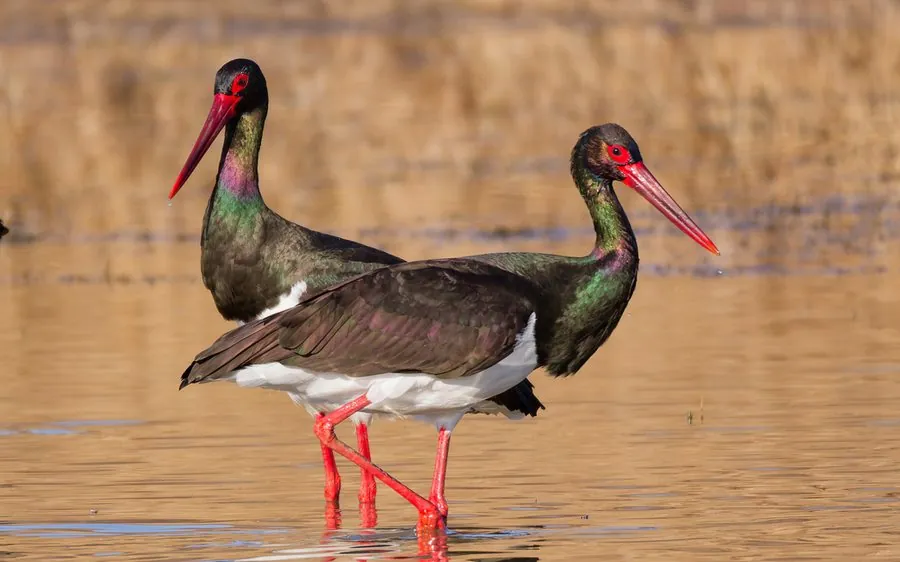

鸟类 · 动物界
黑鹳 Ciconia nigra

体态优雅的黑色涉禽，背翅乌黑带金属光泽、腹部雪白，红喙红腿，被称为“黑鹳”，在中国属国家一级保护动物。
- 分类
- 门脊索动物门纲鸟纲目鹳形目科鹳科属鹳属
- 栖息环境
- 山地溪流、河谷、沼泽、水库与河岸，多在悬崖或高树上营巢
- 地理分布
- 繁殖于欧洲、中亚、中国北方和俄罗斯远东，越冬于非洲和南亚
- 保护级别
- IUCN 无危（LC）；中国国家一级保护动物
物种志
黑鹳体长 95–100 cm，翼展 145–155 cm，体重 2.5–3 kg。它的头颈、背部和翅膀呈乌黑色，泛出蓝绿色金属光泽，胸腹部雪白，喙和腿呈鲜红色，眼睛周围有裸露的红皮。飞行时黑色的上体和白色的腹部对比鲜明，姿态轻盈。
黑鹳繁殖于欧洲、中亚、中国北方和俄罗斯远东，冬季南迁到非洲、南亚和东亚南部。它们栖息在山地溪流、河谷、沼泽和水库边，以鱼、蛙、昆虫和甲壳类为食，常在清澈的溪流中涉水觅食。黑鹳多在悬崖岩壁或高大乔木上筑巢，每窝产卵 3–5 枚，孵化 31–34 天。由于栖息地减少和人为干扰，黑鹳数量稀少，中国将其列为国家一级保护动物。
形态与习性
- 食性鱼、蛙、昆虫和甲壳类
- 体长95–100 cm
- 翼展145–155 cm
- 体重2.5–3 kg
- 繁殖每窝 3–5 枚卵，孵化 31–34 天
- 寿命野外约 20 年
趣味知识
- 黑鹳的头颈和背部呈乌黑色，在阳光下会泛出蓝绿色金属光泽。
- 它喜欢在清澈的山地溪流中涉水捕鱼，对水质要求较高。
- 黑鹳多在悬崖岩壁上筑巢，巢由粗树枝堆成，可多年沿用。